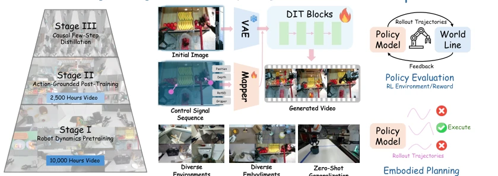
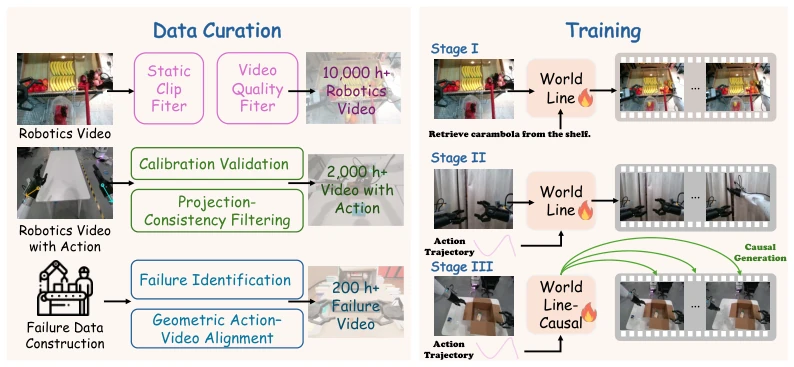
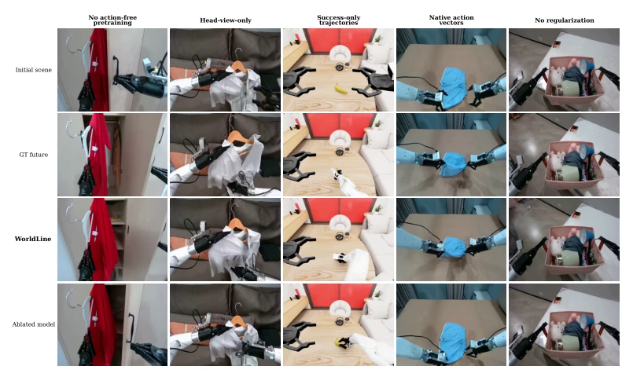
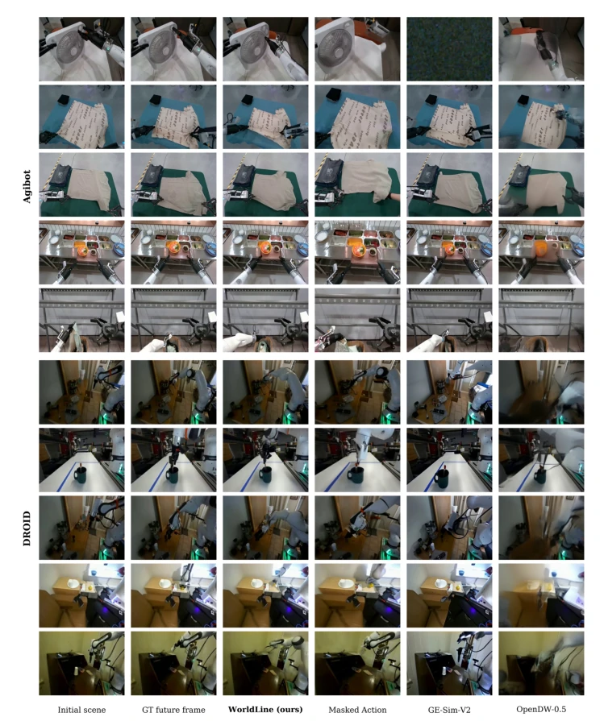
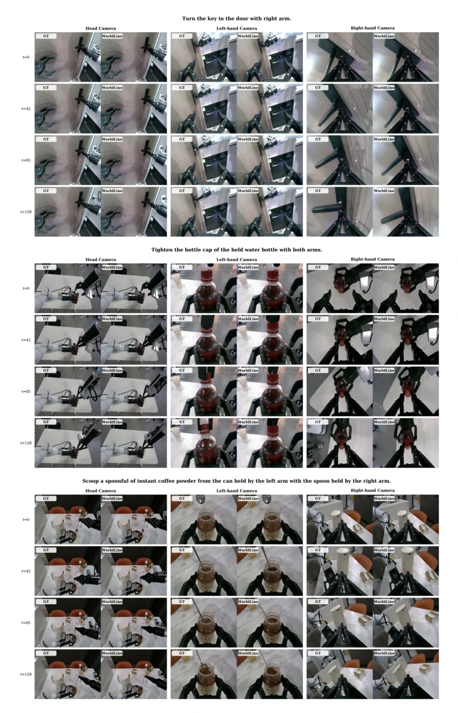
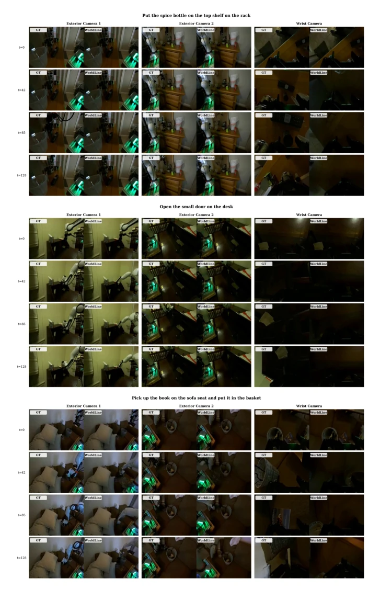
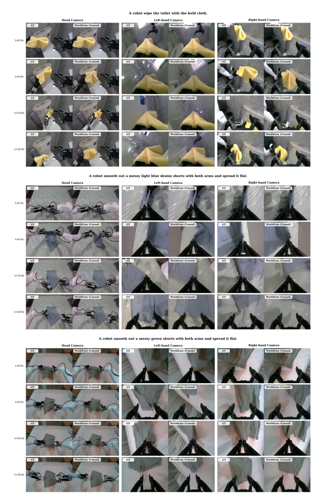
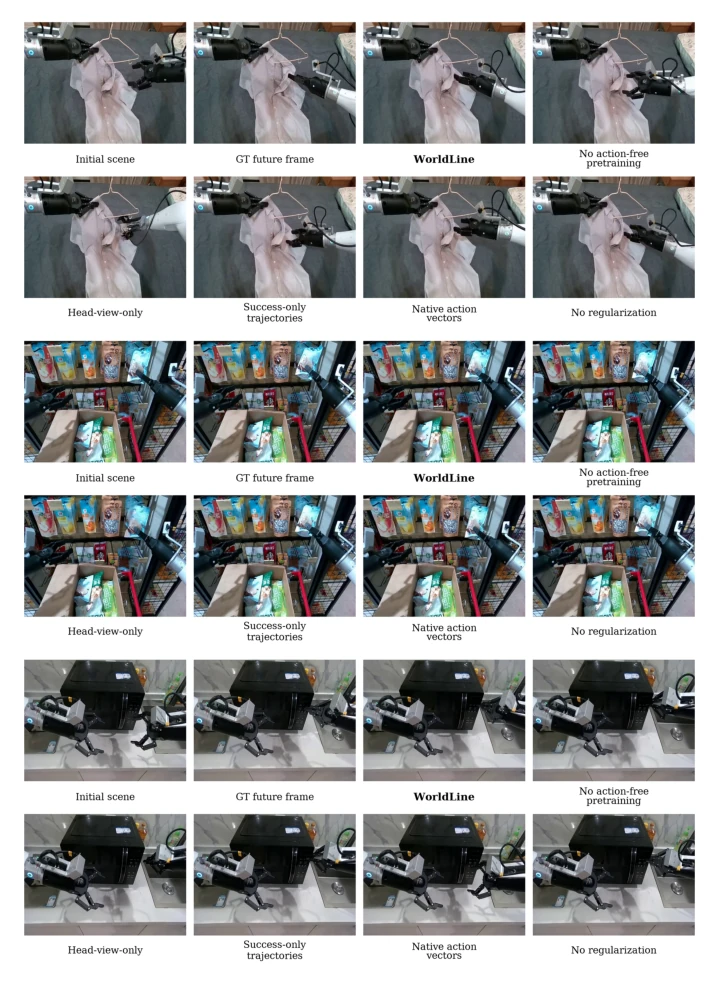
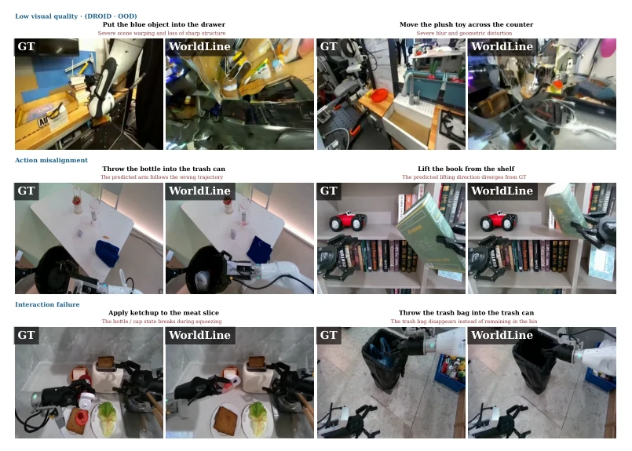

机器人学习最大的痛点是“数据贵、采集难”。传统仿真器（Todorov et al., 2012）需要手搓资产，泛化性差，难以覆盖真实世界的复杂性。视频生成模型（Brooks et al., 2024）虽然能生成视频，但往往只顾视觉逼真，动作不听话，无法用于决策。现有的动作条件模型（Guo et al., 2026; Alzayer et al., 2026）受限于特定机械臂，因为不同机器人的控制空间（维度、坐标系）不兼容，导致模型无法跨机器人泛化，数据难以共享。WorldLine 想解决这个“控制空间异构”问题，让一个模型能理解不同机器人的动作，同时保证生成的视频能准确反映动作后果，而不仅仅是看起来像，从而支持策略评估和规划。
—
方法Method
模型采用三阶段训练。Stage I 利用 10,000+ 小时无动作视频预训练动力学先验，不依赖动作标签，学习机器人 - 物体的通用交互规律。Stage II 是核心，利用 2,500+ 小时有动作数据进行动作接地。创新点在于“图像空间动作映射”：将不同机器人的末端位姿、深度、Rot6D 和夹爪状态投影为图像热力图，统一了异构控制接口，避免了直接拼接原始控制向量带来的维度不匹配。训练时还引入了多视角同步数据和失败轨迹，配合 V-JEPA 2 (Assran et al., 2025) 的关系正则化，确保时空一致性。Stage III 进行因果蒸馏，将迭代采样改为 4 步块自回归，实现低延迟在线 rollout，支持实时规划。
—

Figure 1: Overview of WorldLine. (a) A scalable three-stage training pipeline: Stage I learns robot dynamics from large-scale action-free videos; Stage II grounds heterogeneous robot controls through action-conditioned post-training; and Stage III distills the model for causal few-step rollout. (b) WorldLine maps an initial observation and an image-space control sequence to future videos across diverse environments and robot embodiments, including zero-shot settings. (c) WorldLine support policy evaluation and planning by predicting action outcomes before real-world execution.

Figure 2: Data construction and three-stage training of WorldLine. Left: action-free videos are filtered for dynamics pretraining; action-labeled trajectories undergo calibration and projection checks; and failure trajectories are identified and paired with geometrically aligned controls. Right: Stage I learns manipulation dynamics, Stage II grounds heterogeneous controls with multi-view and failure-enriched training, and Stage III distills the model for efficient causal rollout.
Figure 3: Qualitative action-conditioned video generation. Given initial frame and actions, each model predicts a frame on held-out AgiBotWorld (top) and out-of-domain DROID (bottom). Causal WorldLine better matches ground-truth robot motion and gripper–object configuration.

Figure 6: Qualitative comparison of WorldLine ablations. We compare the full model with variants that remove key data, representation, and training components, highlighting their effects on robot motion and robot–object interaction outcomes.

Figure 8: Additional qualitative comparisons on AgiBotWorld and DROID. Each example shows the initial observation, action condition, ground-truth future, predictions from comparison methods, and the WorldLine prediction. AgiBotWorld examples are drawn from held-out scenes and include both successful and unsuccessful interactions, while DROID examples test transfer to unseen environments, viewpoints, and robot embodiments. Enlarged regions focus on commanded robot motion, contact, and the resulting object-state changes.

Figure 9: Three-view comparison between WorldLine predictions and ground-truth AgiBot- World trajectories. Each example presents synchronized head, left-wrist, and right-wrist obser- vations at multiple time steps from a held-out AgiBotWorld scene. The comparison shows robot motion, contact, and object-state evolution across the global and wrist-mounted camera views.
其他图片Other Figures

Figure 10: Three-view comparison between WorldLine predictions and ground-truth DROID trajectories. Each example presents synchronized head, left-wrist, and right-wrist observations at multiple time steps. WorldLine is evaluated directly on DROID without training or adaptation on DROID data. The comparison exposes the temporal alignment of robot motion, contact, and object- state evolution across global and wrist-mounted camera views.

Figure 11: Long-horizon three-view rollouts generated by Causal WorldLine. We compare the causal predictions with the corresponding ground-truth trajectories using synchronized head, left- wrist, and right-wrist observations sampled across the rollout. The visualization highlights long- term robot motion, object-state evolution, temporal continuity, and cross-view consistency under block-autoregressive generation.

Figure 12: Qualitative effects of the main WorldLine components on AgiBotWorld. Across three examples, we compare the full model with representative ablations of the training data, action- conditioning interface, and relational regularization. All variants receive the same initial observation and action sequence. Enlarged regions highlight differences in robot pose, contact, object motion, and the generation of unsuccessful interaction outcomes.

Figure 13: Selected failure cases of WorldLine. Each pair compares the ground-truth (GT) future with the WorldLine prediction. The top row shows two low-visual-quality examples from out-of- domain DROID evaluation; the middle row shows action misalignment; and the bottom row shows interaction failures involving inconsistent object or container states.